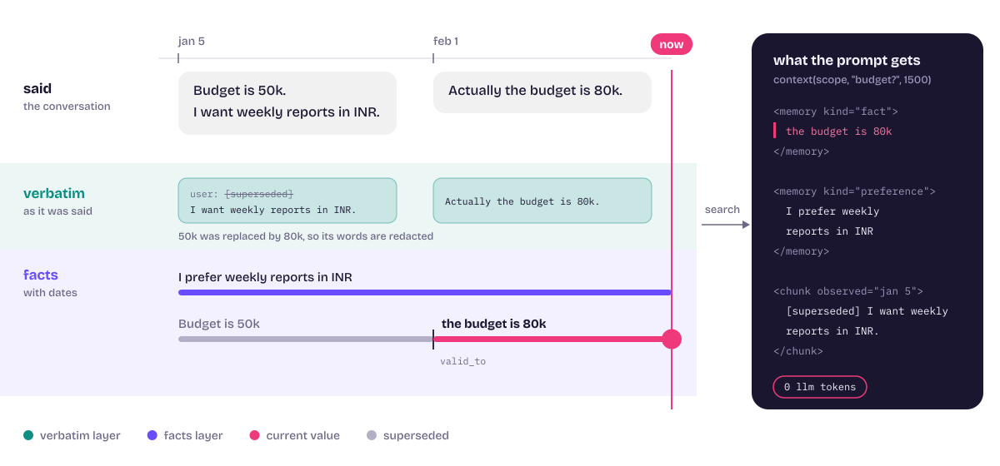

Architecture
One memory, two layers, searched together. Every dependency sits behind a port, and a model is asked only where rules cannot decide.

Two turns, stored twice. The later statement closes the 50k fact, its words are blanked inside the old chunk, and the prompt block reads current.
Overview
Clients reach the engine as a library, over REST or MCP, or through an agent framework hook. Core code depends only on ports, so the language model, embedder, store, queue, auth and parser are all chosen in configuration.
Solid arrows are calls. Dashed boxes are ports: each has several adapters and a contract test suite, and a test fails the build if core code imports an adapter.
Ingest
Adding content returns immediately. A worker then takes the subject's lock, stores the verbatim chunks, derives facts, and resolves each against what is already known, all with no model unless one is needed.
Older pending documents of the same subject run first, so the newest statement is applied last whichever worker picked up its job first.
Supersession
Embedding similarity alone cannot tell a duplicate from an update, since “Budget is 50k” and “Budget is 80k” embed almost identically. So similarity is only used to find neighbours; the decision uses text and, when needed, a model.
Only the ambiguous branch ever reaches a model. Without one, both facts stay and nothing is guessed.
Recall
Fusion weights favour facts slightly over the chunks they came from. The cosine floor trades a little recall for abstaining on off-domain questions.
In an agent loop
Memaso replaces “inject every memory” with a small ranked block, and takes facts from the agent's own tool call so there is no extraction pass.
The only model involved is the one your agent already runs.
Data model
Everything lives in a dedicated Postgres schema, memaso, with row-level security forced on every data table.
Memory links (supersession history with the judge's reason) and per-model embeddings are not drawn.
Deployment
The queue is only needed with more than one replica. The embedding model runs inside each API process.
Design decisions
Verbatim first
A summary loses the detail you need later, so the words are kept and searched directly. Facts sit on top because verbatim text alone cannot say which of two statements is current. This follows the framing of MemPalace, which stores conversations verbatim and retrieves without a model.
Rules before models
Plain statements are decided by rules at zero token cost. A model is consulted only for free text near a stored fact. The honest cost is paraphrased updates, which rules cannot catch: 0.00 on that category, resolved when a model is present.
Exact search, not an approximate index
With tenant, subject and validity filters an approximate index can silently drop true matches, which would hide a current fact. An exact scan costs latency instead: 233 ms p95 at 100k vectors, 333 ms at 200k.
One transaction per change
Inserting a fact, linking it and closing the old one is one transaction. So is forgetting a memory with its source text. A crash never leaves a half-superseded or half-forgotten state.
Thresholds measured on real embeddings
A toy embedder hid two mistakes. With MiniLM, “Budget is 50k” against “Budget is 80k” scored 0.75, below the first neighbour threshold of 0.80, so updates would have stacked. The thresholds are now 0.40 and 0.30, measured, and documented as tied to that embedder.
Everything swappable, and proven so
Ports for model, embedder, store, queue, auth and parser, chosen in configuration. Contract suites any adapter must pass. A test fails if core code imports an adapter or a vendor SDK.
Measurements
Local MiniLM embeddings, no language model in any of these runs. The datasets are synthetic and template-based, so read them as regression checks, not as claims about your data.
Search latency, one subject, exact scan
p95 including query embedding. The line marks the 300 ms target.
Messier chat, 60 conversations, no model
Pass rate by category. Identical on the offline hash embedder and on MiniLM.
The clean set (240 conversations) scores 1.00 on recall@5 and on correct-after-update with 0 stale leaks. Its abstention on near-domain probes is 0.00: a query like “churn of campq41” beside ad metrics scores about 0.5, the same as a vague genuine question, so no similarity cut separates them. The model-driven paths are covered by tests with scripted answers and have not been run against a live provider. Latency was measured on a laptop with Postgres in Docker.